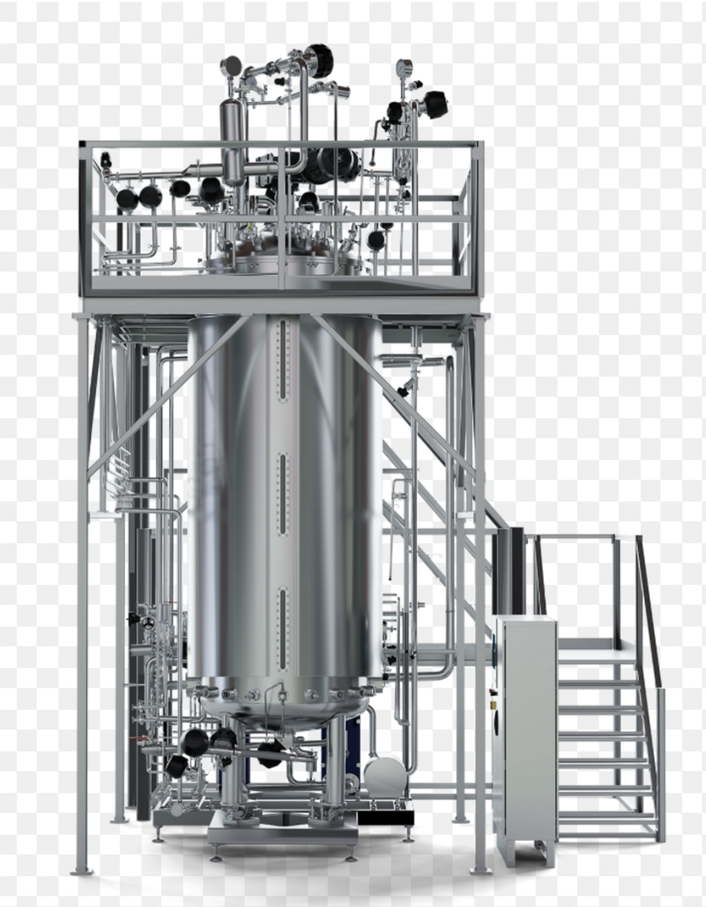

New Bioreactor Design IN PROGRESS
An early-stage bioreactor concept, and the starting point for a longer-term interest in biomedical and bioprocessing engineering.
Why This
I'm genuinely drawn to biomedical and bioprocessing engineering — it's an area where mechanical design has to hold up against something as concrete as manufacturing medicine at scale, not just an abstract performance target.
A bioreactor is a good example of why that's interesting to me. It's a fluid dynamics problem, a sterility and regulatory problem, and a real piece of pressure-rated hardware, all at once — and it has to work exactly right, every single batch, because what comes out of it might end up being a therapy or a vaccine.
This section will grow as the actual design takes shape — geometry, materials, mixing and mass-transfer considerations, and eventually a real SolidWorks model. For now, consider it a note-to-self made public: this is where I want to go next.